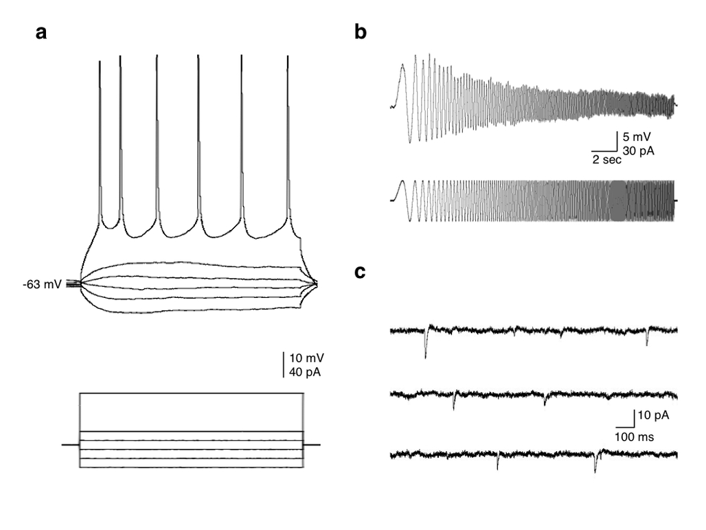

Theme 01
Neuronal excitability and selective vulnerability
We investigate the electrophysiological features that determine how neurons respond, adapt and encode information, and whether distinct excitability profiles help explain why particular neuronal populations are more susceptible to degeneration.
Our work examines resting membrane properties, action-potential firing and intrinsic conductances, including HCN channel-dependent Ih, as interacting components of neuronal phenotype rather than isolated mechanisms.
Mechanistic thread: membrane properties → excitability profile → hyperexcitability or impaired firing → selective vulnerability.